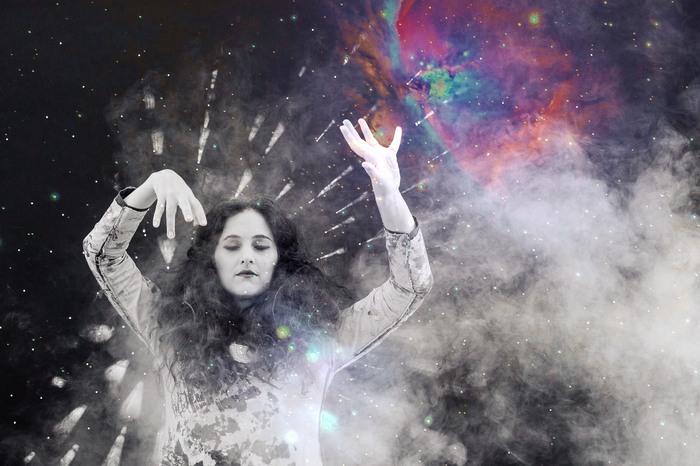

Kirasu will be performing a much-anticipated follow-up to their 2018 debut on April 4, 2020, at One Eyed Jacks in the French Quarter. This upcoming show is the first of a series of three performances, starting the trilogy with a ‘Birth from the Ancient Mesmer’. Audience members may expect to be drawn into the start of a story about the process and power of human consciousness, as told through sound, sight, taste, and proprioception, by a collaborative of artists, including vocalist Sarah Fontenelle, musicians Alex Smith, Paul McDonald, Eric Rogers (of the Generationals), and Michael Girardot (of the Revivalists), media artist Andrew Wade Smith (Process Artifact), novelist Kristen Illarmo, actor Morla Gorrondona, and inventor of gustatory delights Chef Derrick Toups (Bonne Terre Pop Up). Special guest, The Electric Arch.
Kirasu brought an expanded version of their LUNA Fête installation, 'Constellations' to the stage at One Eyed Jacks in New Orleans with the 'Hypercube'. The show was the group’s live debut and included projection-mapped visuals and interactive technology paired with original music, as well as mysterious gifts to stimulate curious exploration of a new world. The debut featured the work of computer scientist, Jenna deBoisBlanc, and the musical talents of Rick G Nelson, Eric Bolivar, Trey Cloutier, Matt Cloutier, and Khari Allen Lee. Special guests - A Living Soundtrack.
Constellations was an animated, interactive celestial skyscape - a cosmic orchestra of light and sound - that debuted at Luna Fete 2017. In this incarnation of the Kirasu universe, participants’ bodies were tracked and transformed into constellations, illuminating the night sky and entangling motion with the stars. The current installation was just one of an infinite number of potential materializations inspired by philosophical musings on the unknown and on what lies beyond.